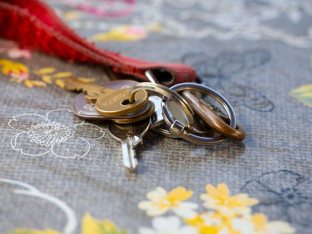
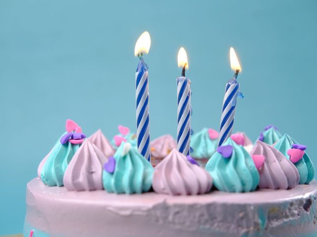
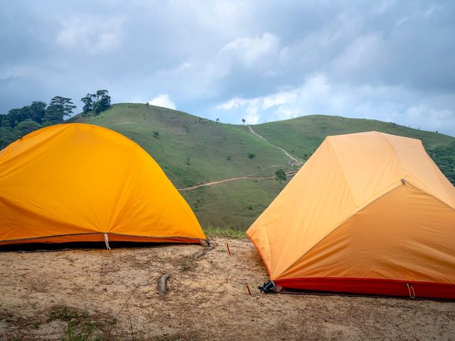
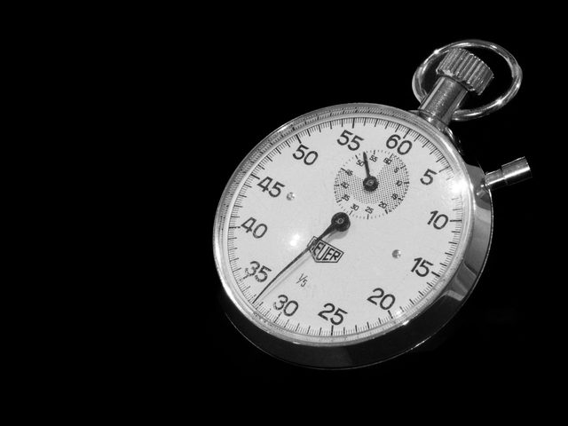
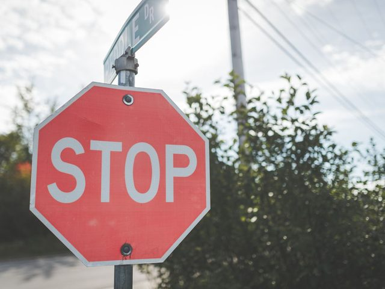
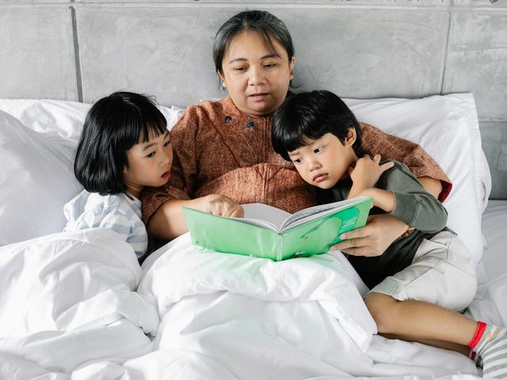
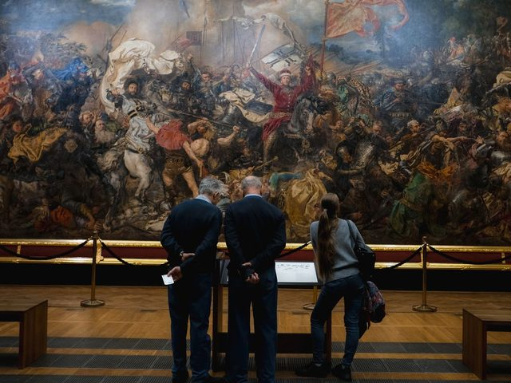

VOCABULARY · LALA WORD UNIT 6
The Way We Change．一字多義（六）
change 是改變，也是「零錢」；plant 是植物，也是「工廠」。這個單元有 8 個主題單字、12 個更多單字。
共 20 個單字．點 🔊 聽發音

1changen. / v.
改變；變化；零錢；改變；更換
change - changed - changed - changing
- 1n.改變；變化There are some changes to our class schedule.我們的課表有一些變動。
- 2n.零錢Here is your change. Thank you!這是找您的零錢，謝謝！
- 3v.改變；更換 change one's mind 改變心意；change into 換成I changed my mind. I want the red one.我改變主意了，我要紅色的。

2losev.
弄丟；失去；輸
lose - lost - lost - losing
- 1v.弄丟；失去 lose weight 減重；lose interest 失去興趣；lose one's voice 失聲I lost my umbrella on the bus.我把雨傘掉在公車上了。
- 2v.輸Our team lost the game 2 to 3.我們隊以二比三輸了比賽。
3learnv.
學習；得知；記住；背熟
learn - learned（learnt） - learned（learnt） - learning
- 1v.學習 learn to + V 學會；learn one's lesson 學到教訓I want to learn to play the piano.我想學彈鋼琴。
- 2v.得知 learn about / of 得知We learned about the news from TV.我們從電視得知這個消息。
- 3v.記住；背熟 learn… by heart 背熟Learn these words by heart.把這些單字背起來。
4livev. / adj.
生活；過活；居住；活的；現場的
live - lived - lived - living（動詞唸 [lɪv]，形容詞唸 [laɪv]）
- 1v.生活；過活 live on 靠…過活People can't live without water.人沒有水無法生活。
- 2v.居住I live in Kaohsiung with my family.我和家人住在高雄。
- 3adj.活的The shop sells live fish and crabs.這家店賣活魚和活螃蟹。
- 4adj.現場的We watched a live show last night.我們昨晚看了一場現場表演。

5plantn. / v.
植物；工廠；種植；輕放（親吻）
plant - planted - planted - planting
- 1n.植物Plants need water and sunlight.植物需要水和陽光。
- 2n.工廠My uncle works at a power plant.我叔叔在發電廠工作。
- 3v.種植We planted a tree in the school garden.我們在學校花園種了一棵樹。
- 4v.輕放（親吻） plant a kiss on 突然親一下Mom planted a kiss on the baby's face.媽媽在寶寶臉上親了一下。

6wayn.
方法；方式；道路；方向；距離
複數 ways
- 1n.方法；方式 way to + V 做…的方法This is the best way to learn English.這是學英文最好的方法。
- 2n.道路；方向 lose one's way 迷路；the other way around 相反Can you tell me the way to the station?你可以告訴我去車站的路嗎？
- 3n.距離The beach is a long way from here.海邊離這裡很遠。

7restv. / n.
休息；休息；靠在；倚靠；安息；其餘；剩下
rest - rested - rested - resting
- 1v.休息Let's stop and rest for a while.我們停下來休息一下吧。
- 2n.休息 take / have a rest 休息一下You look tired. Take a rest.你看起來很累，休息一下吧。
- 3v.靠在；倚靠She rested her head on my shoulder.她把頭靠在我的肩膀上。
- 4v.安息 rest in peace 安息May he rest in peace.願他安息。
- 5n.其餘；剩下 the rest 其餘的I ate half of the pizza and saved the rest.我吃了半個披薩，剩下的留著。

8missv. / n.
錯過；沒趕上；沒打中；沒接到；想念；小姐；老師（Miss）；失誤；沒打中
miss - missed - missed - missing
- 1v.錯過；沒趕上Hurry up, or we will miss the bus.快點，不然我們會趕不上公車。
- 2v.沒打中；沒接到He kicked the ball but missed the goal.他踢了球但沒射進球門。
- 3v.想念I miss my grandma a lot.我很想念奶奶。
- 4n.小姐；老師（Miss）Miss Wang is our music teacher.王老師是我們的音樂老師。
- 5n.失誤；沒打中That was a bad miss.那一球失誤得很可惜。

9agen. / v.
年紀；年齡；時代；很長的時間（ages）；變老；熟成
age - aged - aged - aging
- 1n.年紀；年齡 at the age of 在…歲時；act one's age 舉止符合年紀He started swimming at the age of five.他五歲開始學游泳。
- 2n.時代We live in the age of the internet.我們生活在網路時代。
- 3n.很長的時間（ages）I haven't seen you for ages!好久不見！
- 4v.變老；熟成The cheese is aged for a year.這塊起司熟成了一年。

10campn. / v.
營隊；營地；露營
camp - camped - camped - camping
- 1n.營隊I went to an English camp last summer.我去年夏天參加英語營。
- 2n.營地We set up camp near the lake.我們在湖邊紮營。
- 3v.露營 go camping 去露營We camped in the mountains for two nights.我們在山上露營兩晚。

11cooladj. / v.
涼爽的；冷靜的；酷的；使冷卻
cool - cooler - coolest；cool - cooled - cooled - cooling
- 1adj.涼爽的It's cool in the morning.早上很涼爽。
- 2adj.冷靜的 as cool as a cucumber 非常冷靜Stay cool and think.保持冷靜，好好想想。
- 3adj.酷的Your new shoes look cool!你的新鞋看起來好酷！
- 4v.使冷卻 cool down 冷卻；冷靜下來Let the soup cool down before you eat it.湯放涼一點再喝。

12departmentn.
（公司的）部門；（百貨的）專櫃；（大學的）系
複數 departments
- 1n.（公司的）部門；（百貨的）專櫃 department store 百貨公司Mom bought shoes at a department store.媽媽在百貨公司買了鞋子。
- 2n.（大學的）系My sister studies in the English Department.我姊姊讀英文系。

13justadv. / adj.
剛才；剛剛；只是；僅僅；正好；恰好；實在；很；公正的
- 1adv.剛才；剛剛 just now 剛才I just finished my homework.我剛寫完功課。
- 2adv.只是；僅僅It's just a joke.那只是個玩笑。
- 3adv.正好；恰好This dress is just right for you.這件洋裝你穿剛剛好。
- 4adv.實在；很The view is just beautiful.風景實在太美了。
- 5adj.公正的The teacher is fair and just.這位老師很公平公正。
14oiln. / v.
油；石油；給…上油；油畫
oil - oiled - oiled - oiling
- 1n.油；石油Fry the eggs in a little oil.用一點油煎蛋。
- 2v.給…上油Dad oiled the old bike.爸爸幫舊腳踏車上油。
- 3n.油畫There are many famous oils in this museum.這間美術館有很多名畫（油畫）。

15rollv. / n.
滾動；翻動；捲；一捲；小圓麵包；名單；名冊
roll - rolled - rolled - rolling
- 1v.滾動；翻動 roll over 翻身The ball rolled down the hill.球滾下山坡。
- 2v.捲 roll up 捲起Roll up your sleeves before you wash the dishes.洗碗前把袖子捲起來。
- 3n.一捲We need a new roll of toilet paper.我們需要一捲新的衛生紙。
- 4n.小圓麵包I had a bread roll for breakfast.我早餐吃了一個小圓麵包。
- 5n.名單；名冊The teacher called the roll.老師點名。

16stationn. / v.
車站；局；電臺；駐紮
station - stationed - stationed - stationing
- 1n.車站；局 police station 警察局；fire station 消防局；gas station 加油站Let's meet at the train station.我們在火車站碰面。
- 2n.電臺This radio station plays great music.這個電臺播的音樂很好聽。
- 3v.駐紮His dad was stationed on Kinmen.他爸爸以前駐守在金門。

17stopv. / n.
停止；停留；阻止；停止；車站；站牌
stop - stopped - stopped - stopping
- 1v.停止；停留 stop + V-ing 停止做；stop to + V 停下來去做；stop by 順道拜訪Stop talking and listen!別說話，注意聽！
- 2v.阻止 stop… from + V-ing 阻止…做Nobody can stop him from trying.沒有人能阻止他嘗試。
- 3n.停止The car came to a stop.車子停下來了。
- 4n.車站；站牌 bus stop 公車站Get off at the next stop.在下一站下車。

18storyn.
故事；說法；藉口；樓層
複數 stories
- 1n.故事 bedtime story 睡前故事；It's a long story. 說來話長Grandpa told us a funny story.爺爺說了一個好笑的故事給我們聽。
- 2n.說法；藉口 make up a story 編藉口He made up a story about being sick.他編了一個生病的藉口。
- 3n.樓層Our school building has five stories.我們的校舍有五層樓。

19tripn. / v.
旅行；旅程；絆倒
trip - tripped - tripped - tripping
- 1n.旅行；旅程 go on a trip 去旅行；field trip 校外教學；round-trip 來回We went on a trip to Hualien.我們去花蓮旅行。
- 2v.絆倒 trip over 被…絆倒Be careful. Don't trip over the box.小心，別被箱子絆倒。

20visitv. / n.
參觀；拜訪；瀏覽（網站）；拜訪；參觀
visit - visited - visited - visiting
- 1v.參觀；拜訪We visited the National Palace Museum.我們參觀了故宮博物院。
- 2v.瀏覽（網站）Visit our website for more information.請瀏覽我們的網站了解更多。
- 3n.拜訪；參觀 pay a visit 拜訪Grandpa paid us a visit last Sunday.爺爺上星期天來看我們。
FOCUS
一字多義：最常見 vs. 容易忽略的意思
| 單字 | 最常見的意思 | 容易忽略的意思 |
|---|---|---|
| change | 改變 | 零錢 |
| live | 住 | 活的；現場的（唸 [laɪv]） |
| plant | 植物；種植 | 工廠 |
| rest | 休息 | 其餘的 |
| miss | 錯過；想念 | 小姐；老師 |
| just | 剛剛；只是 | 公正的 |
| roll | 滾動 | 一捲；小圓麵包；名單 |
| story | 故事 | 樓層；藉口 |
| trip | 旅行 | 絆倒 |
FOCUS
stop + V-ing 和 stop + to V
| 句型 | 意思 | 例句 |
|---|---|---|
| stop + V-ing | 停止正在做的事 | He stopped playing games.（不玩了） |
| stop + to V | 停下來，去做另一件事 | He stopped to drink water.（停下來喝水） |
| stop… from + V-ing | 阻止…做 | The rain stopped us from going out. |
FOCUS
常用片語
| 片語 | 意思 | 例句 |
|---|---|---|
| change one's mind | 改變心意 | She changed her mind. |
| lose weight | 減重 | Dad wants to lose weight. |
| learn… by heart | 背熟 | Learn the poem by heart. |
| take a rest | 休息一下 | Let's take a rest. |
| pay a visit | 拜訪 | We paid Grandma a visit. |
| go on a trip | 去旅行 | They went on a trip to Japan. |